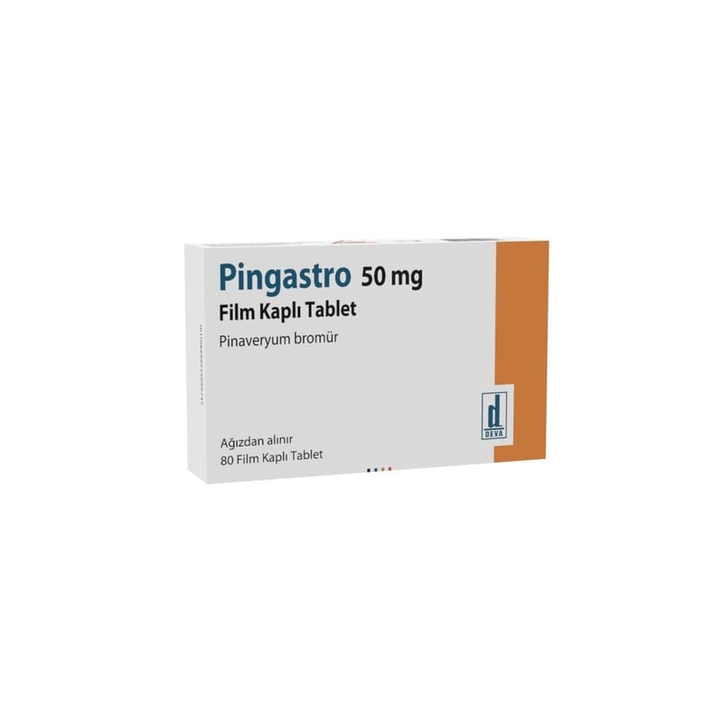

Pingastro 50 mg Film Kaplı Tablet, 80 Adet

Ne için kullanılır
KT · Bölüm 1• PİNGASTRO, 40 ve 80 tabletlik film kaplı tabletlerden oluşan blister ambalajlarda sunulur. Tabletler, sarımsı-turuncu, yuvarlak ve bikonvekstir.
• PİNGASTRO pinaveryum bromür içerir. Bu, antispazmodik olarak adlandırılan bir ilaç grubuna dahildir ve sizin bağırsak ve safra kanalınıza etki eder.
• Bağırsak, uzun kaslardan oluşan, yiyeceklerin sindirilmek üzere geçtiği bir kanaldır. Safra kanalı, safranın karaciğerinizden mide sonrasındaki bölüme açıldığı kanaldır. Eğer bağırsak ya da safra kanalı spazm geçirirse ve kuvvetli bir şekilde kasılırsa ağrınız olur. Bu ilaç spazmın ve ağrının rahatlatılmasını sağlar.
• PİNGASTRO, bağırsak veya safra kanalındaki tıbbi durumlardan kaynaklanan mide veya bağırsak şikayetlerinin rahatlatılmasında kullanılır. Bu şikayetler kişiden kişiye değişmekle birlikte aşağıdaki gibi olabilir: Mide ağrısı ve kramp
İshal, kabızlık veya her ikisi Şişkinlik ve yellenme
PİNGASTRO ayrıca baryum lavmanından önce bağırsağın dışkıdan temizlenmesi için kullanılır-bu bir X-ışını (röntgen) çeşididir.